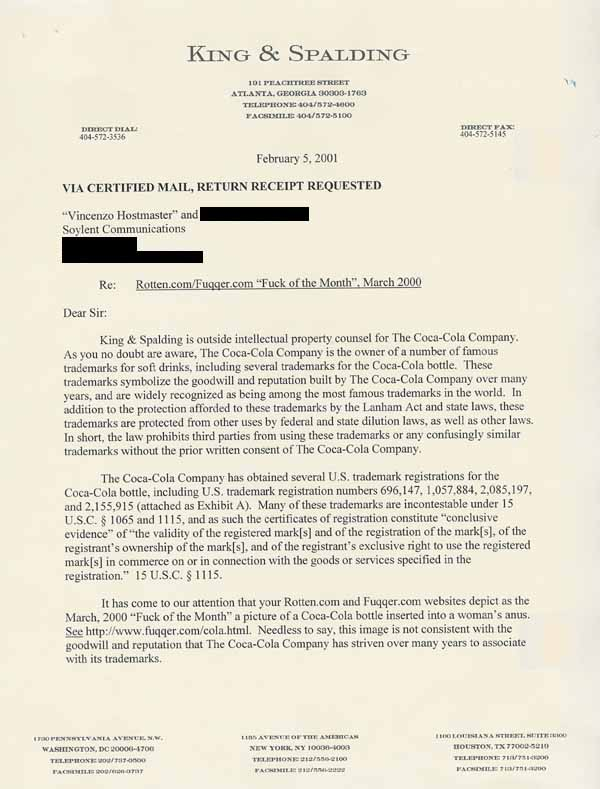
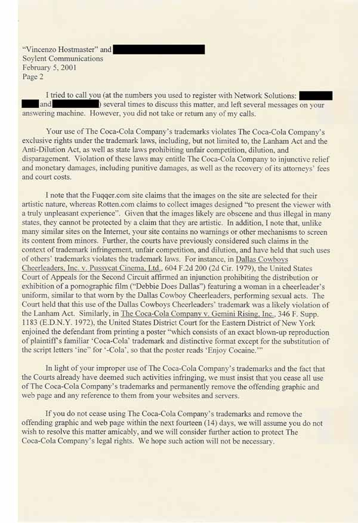
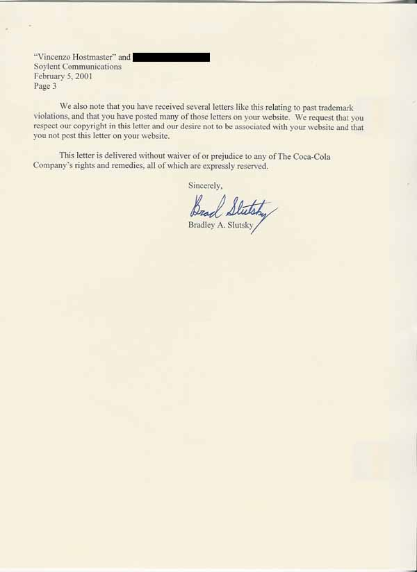
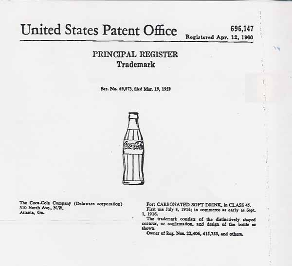
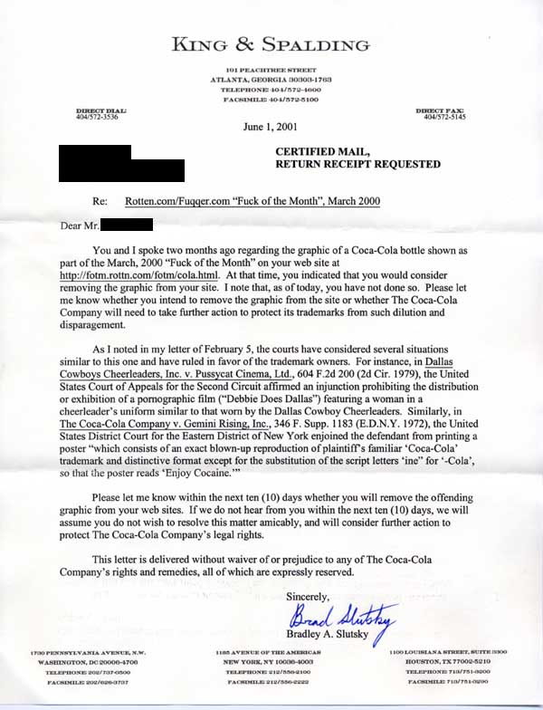

cease & desist letter #14 - Coke
An archive of disturbing illustration
Part I. Cause
The Coca-Cola Corporation has complained that their trademark is
visible in this bottle-up-the-bum that we featured in one of our Fuck of the
Month's. Examining the picture in question under close scrutiny, we see that
the logo on the bottle is nearly completely obscured by the fact that it is
inside the model's rectum. The actual complaint stems from the shape of
the bottle, which was claimed as a trademark in the 1950's. But to be honest,
we weren't even thinking about the shape of the bottle or what this woman's
brand preferences were when we selected this photo. And in fact we were
astonished when anyone else was.





Part II. Conclusion
Unfortunately the Coca-Cola Corporation does have some case law on their side,
though whether it would stand up in court is questionable. We say this because the
brand is incidental to the activity in question, and in fact it must be pointed out
for most viewers to notice that a particular brand is involved. In all of the legal
precedents cited, brand choice is fundamental in the presentation.
[return to rotten.com]
|